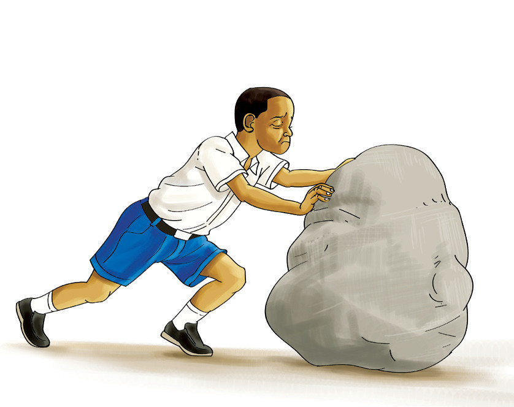
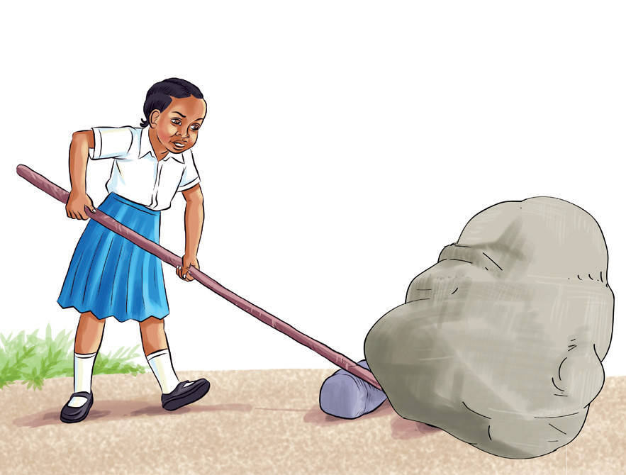

a

b

Kielelezo namba 3: Kusogeza jiwe
5. Njia ipi ni rahisi kusogeza jiwe kati ya Kielelezo namba 3(a) na (b)? Kwa nini?


Kielelezo namba 3: Kusogeza jiwe
5. Njia ipi ni rahisi kusogeza jiwe kati ya Kielelezo namba 3(a) na (b)? Kwa nini?